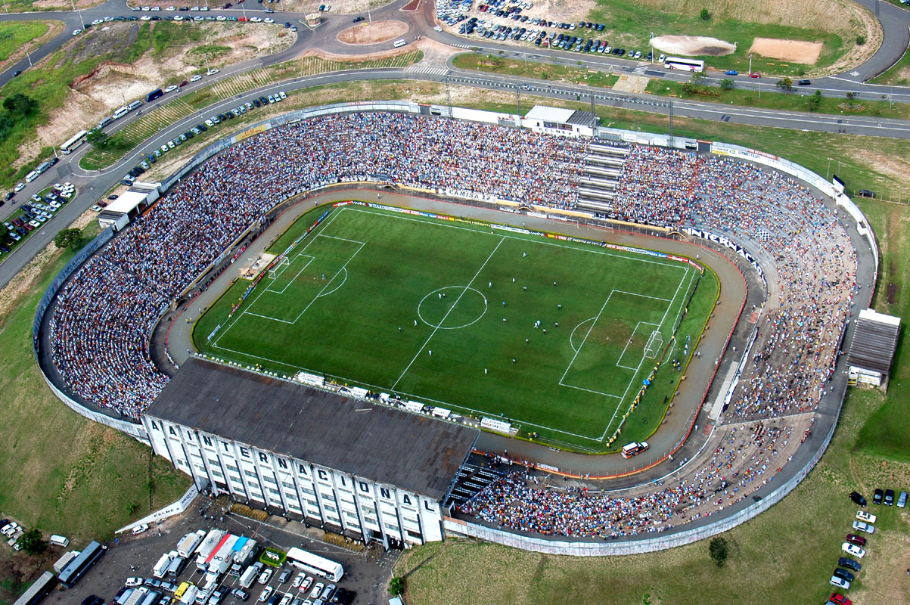
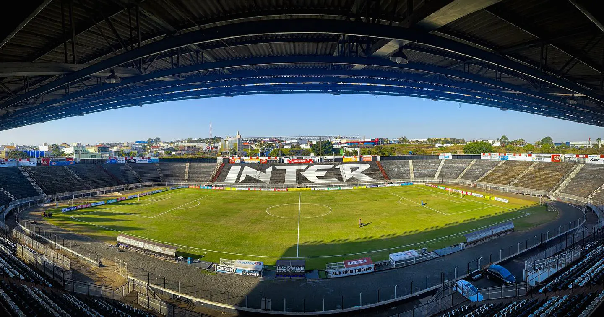
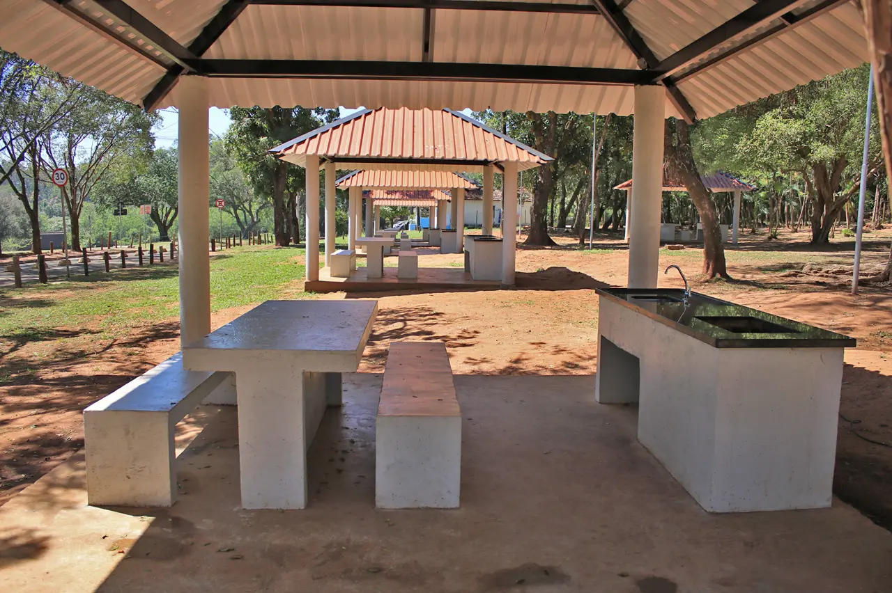
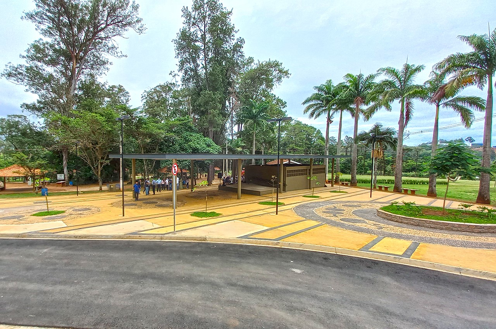
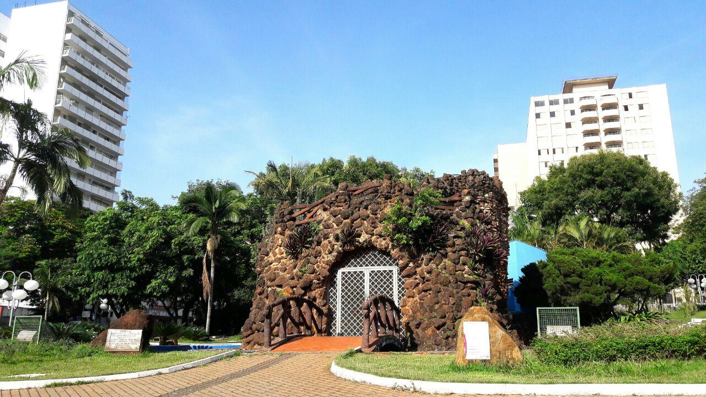
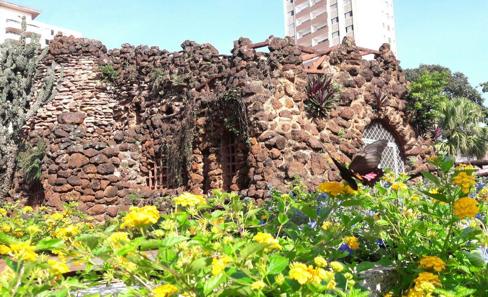
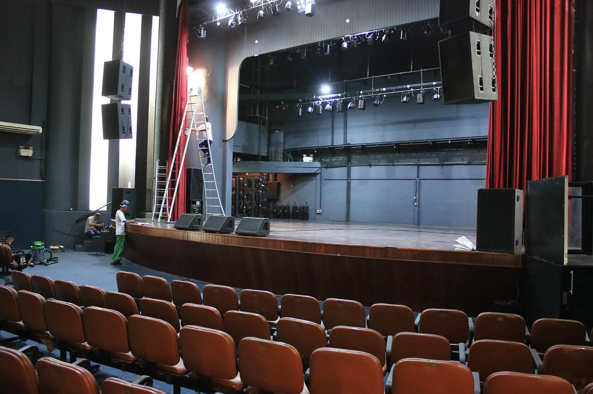
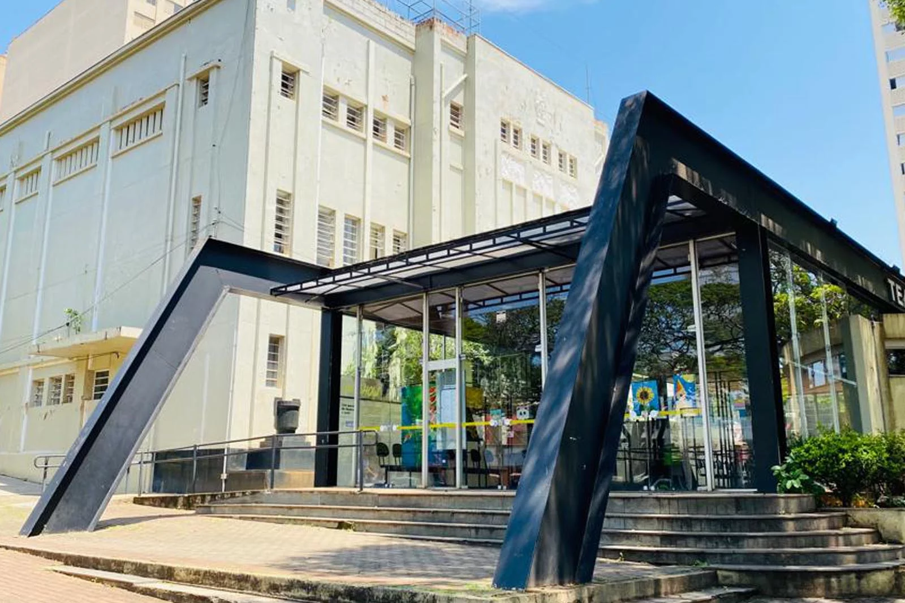

Limeirão
O Estádio Major José Levy Sobrinho, mais conhecido como Limeirão, foi inaugurado em 1982 e é um dos principais pontos de referência esportivos da cidade. Com capacidade para cerca de 15 mil espectadores, o estádio possui uma infraestrutura simples, mas funcional, e é palco de competições regionais.
O Limeirão conta com tribunas cobertas, vestiários e áreas de treinamento, proporcionando condições adequadas para a prática do futebol, sendo também um local de grande tradição e emoção para os torcedores limeirenses.
Horto Florestal
O Horto Florestal de Limeira é uma área verde de grande importância para a cidade, oferecendo um ambiente tranquilo e cercado pela natureza para os moradores e visitantes. Com uma vasta diversidade de árvores, plantas e fauna local, o local é ideal para caminhadas, piqueniques e atividades ao ar livre.
Além de seu papel como área de lazer ecológico, o horto também contribui para a preservação e educação ambiental, com espaços para trilhas e observação da natureza. Com sua atmosfera serena e seu ar puro, o Horto Florestal é um refúgio natural, perfeito para quem busca um contato direto com a natureza e momentos de descanso longe do ritmo acelerado da cidade.
Gruta da Paz
A Gruta da Paz é um importante ponto de visitação religiosa e turística, conhecida por sua atmosfera de tranquilidade e contemplação. O espaço é rodeado por um jardim que proporciona um ambiente sereno, com alamedas arborizadas e áreas para descanso.
Ideal para momentos de oração e reflexão, a gruta oferece aos visitantes uma experiência de paz interior, além de ser um símbolo de fé e devoção. Com sua beleza natural e ambiente acolhedor, a Gruta da Paz se tornou um refúgio para aqueles que buscam serenidade e conexão espiritual.
Teatro Vitória
O Teatro Vitória é um dos principais espaços culturais de Limeira, destacando-se por sua rica programação e estrutura acolhedora. Inaugurado em 1928, o teatro combina elementos de tradição e modernidade, oferecendo um palco para apresentações de música, dança, teatro e outros eventos culturais.
Com capacidade para cerca de 600 pessoas, o Teatro Vitória é um importante centro de difusão cultural da cidade, atraindo tanto artistas locais quanto nacionais. Sua arquitetura clássica e seu ambiente intimista criam uma atmosfera única, proporcionando ao público uma experiência de imersão artística e emocional. Ao longo dos anos, o teatro se consolidou como um verdadeiro ponto de encontro para a cultura limeirense.
